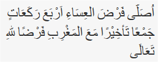
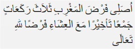

Sholat Jama'
Sholat Jama'
Shalat isya' dahulu empat rakaat kemudian shalat magrib tiga rakaat, dilaksanakan pada waktu ‘isya. Tata caranya sebagai berikut: Berniat menjamak salat Isya dengan jamak ta’khir. Bila dilafalkan yaitu:  ”Ushalli fardhal-'isya'i arba'a raka'aatin jam'an ta'khiiran ma'al maghribi fardhal-lillaahi-ta'aala” Artinya: “Saya berniat salat ‘isya empat rakaat digabungkan dengan salat magrib dengan jamak ta’khir karena Allah Ta’ala.” Berdiri lagi dan berniat salat yang kedua (maghrib), jika dilafalkan sebagai berikut:  ”Ushalli fardhal maghribi tsalatsa raka'aatin jam'an ta'khiiran ma'al 'isyai fardhal-lillaahi-ta'aala” Artinya: “Saya niat salat salat magrib tiga rakaat digabungkan dengan salat ‘isya dengan jamak ta’khir karena Allah Ta’ala” Catatan: Ketentuan setelah salam pada salat yang pertama sama seperti salat jamak takdim. Untuk menghormati datangnya waktu salat, hendaknya ketika waktu salat pertama sudah tiba, maka orang yang akan menjamak ta’khir, sudah berniat untuk menjamak ta’khir shalatnya, walaupun salatnya dilaksanakan pada waktu yang kedua.
Jama' Ta'khir
Cara Melaksanakan Salat Jamak Ta'khir, Maghrib dengan Isya'